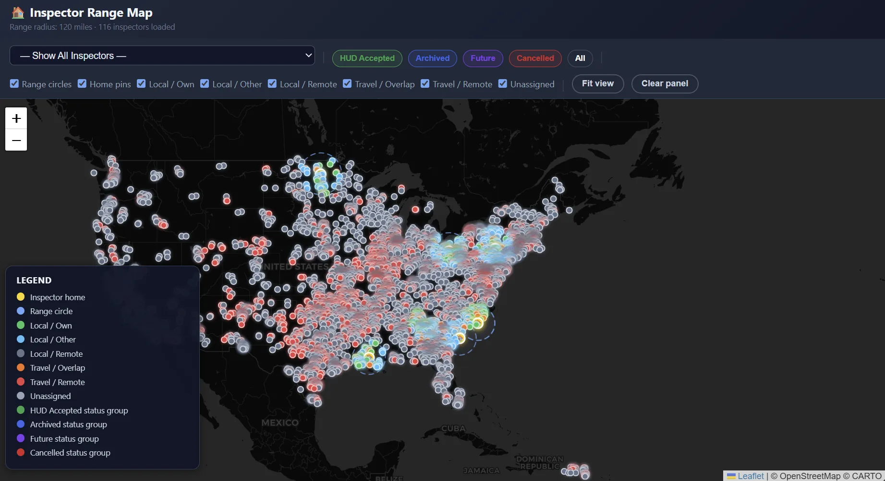
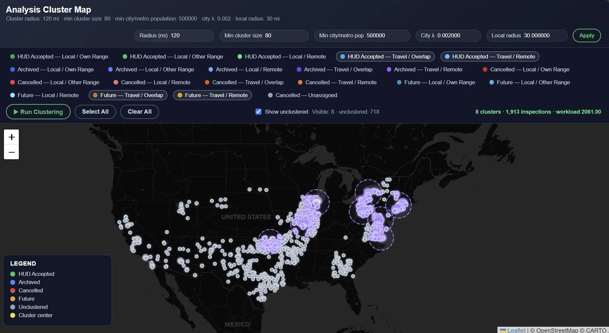
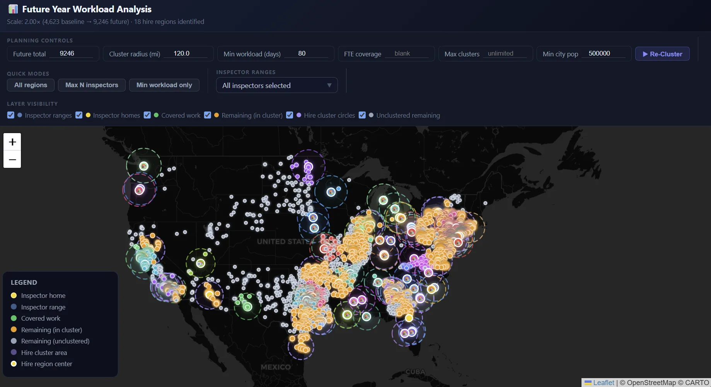

CMCS · $250K Projected Annual Savings · 2026
CMCS incurred additional costs when inspections required inspectors to travel beyond their normal territories. I developed a geospatial analysis system to identify concentrations of travel inspections and determine where local hiring could reduce future coverage costs. The initial analysis identified approximately $250,000 in projected annual savings opportunities.
The Problem
Inspectors receive additional compensation when assignments require travel outside their normal service areas. Across the inspector network, some of this travel represented work that could potentially be covered more efficiently by existing local capacity or by establishing local coverage. CMCS had not previously had a systematic way to identify and quantify these geographic opportunities.
The Approach
I developed a pipeline that ingests current inspection data, geocodes inspection addresses, classifies inspections as local or travel relative to the assigned inspector, and clusters geographically concentrated travel inspections. The resulting clusters identify regions where the volume and distribution of travel work may justify local hiring. The system produces an interactive dashboard and an Excel report suitable for operational review.
Technical Implementation
Every run produces one self-contained HTML dashboard with three interactive maps, and one Excel report:

Inspector Ranges — 116 inspectors mapped with their inspection locations and classifications

Analysis Clusters — 8 clusters covering 1,913 travel inspections identified as inefficient

Future Year Analysis — projecting 2× workload growth, 18 hire regions identified
All three maps are interactive controls built directly into the dashboard's HTML — cluster radius, minimum city population, and projected workload can all be adjusted and re-clustered live in the browser, with no need to rerun the underlying Python pipeline.
Results
The initial analysis identified several geographic concentrations with sufficient travel volume to warrant evaluation for local hiring. The resulting recommendations represented approximately $250,000 in projected annual savings opportunities. The system was designed as a repeatable analysis rather than a one-time report, allowing the organization to reassess hiring needs as inspection volume and geographic coverage change.
Engineering Lessons
onclick= attributes, which resolve in the global scope — understanding the distinction between module-based and single-file embedded JavaScript patterns resolved the bug.Technologies